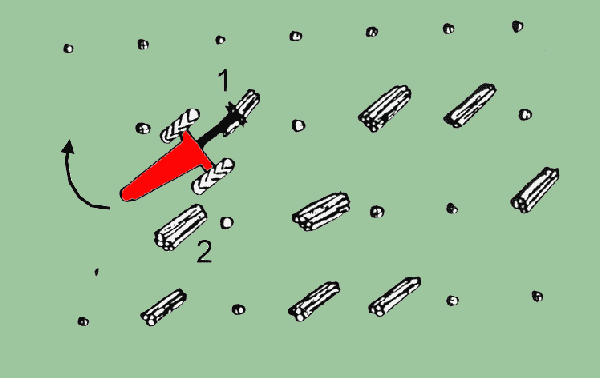
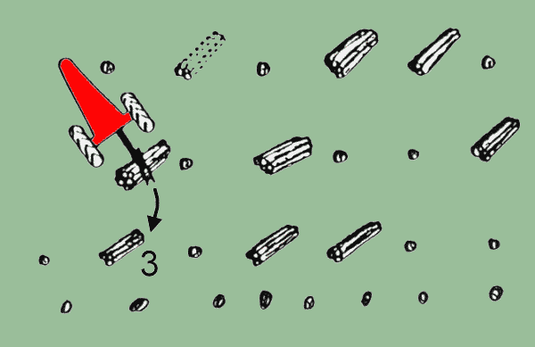
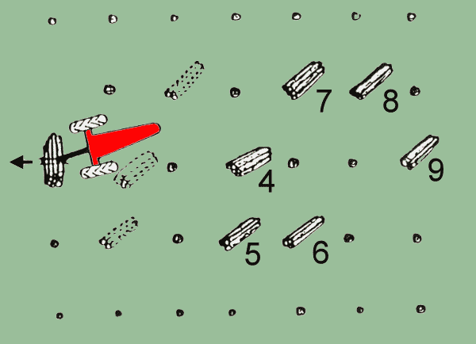

|
INFORME TÉCNICO TECFOR Nº 02 |
|
Madereo con Trineumático TECFOR: 1ª parte
El TECFOR puede ser usado
perfectamente como una máquina de extracción , manejando el largo total del árbol y la madera
corta , tanto en el raleo como en la tala rasa de arboles pequeños de menos de 0.5 toneladas . Su agilidad
para acumular una carga , permite ciclos rápidos y por ende una alta productividad en distancias cortas
de madereo .
Sin embargo su limitada capacidad de carga (2.2 ton ) restringe la distancia económica promedio de madereo
a menos de 150 metros . Los senderos de extracción deben ser lo más rectos posible para reducir el
daño de los árboles que quedan en el raleo y la necesidad del operador para efectuar giros . El madereo
cuesta arriba reduce la capacidad de carga y la productividad . La extracción siempre deberá hacerse
tirando el extremo grueso y no el delgado , maximizando así la capacidad de carga .
Existen dos técnicas que se describen más adelante para maderear con material de todo el largo del
árbol : en retroceso y hacia adelante . Esta última sin embargo , se restringe al manejo de uno a tres
árboles .
Los espejos retrovisores montados a cualquier lado de la máquina y la nueva ventana trasera con espejo panorámico, mejoran notablemente la visibilidad hacia atrás , para cuando el
operador viaje en retroceso .
El sistema indicado en la sección siguiente , describe una operación de raleo incluyendo volteo y
desrame con motosierra y extracción con el TECFOR . Los mismos principios se aplican en la tala rasa de árboles pequeños
, y debido al mayor volumen por hectárea y a la ausencia de árboles residuales , uno debiera esperar
una mayor productividad que la en raleos de árboles del mismo tamaño . Tanto la tala como la extracción
, se discuten por separado y se dan pautas y guías de operación .
1.- Tala :
los taladores deberán trabajar una faja angosta que comprenda 2 a 3 hileras . Los árboles deberán
voltearse lejos de la cancha y así extender los trozos ya sea en un modelo de espiga o bien todos en una
única dirección . Con un sistema para madera corta , los árboles se voltean , se desraman
, se cortan a su longitud y se almacenan en gavillas .
Es necesario cortar los árboles lo más abajo posible . Los motosierristas deberán evitar que
se cubran de barro los tocones y las puntas de los trozos . El plan de faja ayuda a reducir el problema del lodo
. Los taladores deberán saltarse las fajas contiguas hasta que se haya extraído la faja talada .
Lo ideal sería voltear una faja completa antes de la extracción .
Si eso no es posible , los taladores necesitan mantener aproximadamente 5 a 10 árboles delante del TECFOR , para evitar
interferencia . El sistema de faja define un corredor de madera a la extracción y reduce las posibilidades
de que se pierdan trozos .
2.- Extracción :
El TECFOR
sigue detrás de los motosierristas trabajando una sola faja completa cada vez , o girando entre los cortadores
y sus fajas . El sendero que se toma deberá evitar el terreno accidentado y otros obstáculos . El
operador sale , toma una carga de trozos y en retroceso los traslada hacia la cancha . El número de piezas
extraídas por ciclo dependerá del tamaño del árbol . En madereos cortos, 2 o 3 árboles
formarán una carga , pero en aquellos más largos , es importante tomar la mayor carga posible .
Los siguientes diagramas ilustran un método de extracción de madera corta y dos procedimientos para
viajar hacia adelante con una carga mediana y por último un método normal para viajar en retroceso
bajo carga completa . Debe recordarse que una vez que la madera ha sido sacada hacia la cancha , el TECFOR puede almacenar
rápidamente las trozas para su posterior carguío .
2.1.- Extracción de madera corta
Paso 1 :
Los árboles han sido volteados , trozados , desramados y engavillados . El TECFOR va y toma el N°1 . El
operador entonces , retrocede y gira el vehículo hacia el montón N°2.

Paso 2 :
Luego gira la garra y ubica el montón sobre su similar N°2 , deja caer el montón y abre al mismo
tiempo la garra para tomar ambos . En seguida , avanza hacia el montón N°3 , repite el proceso y extrae
la madera corta hacia la orilla del camino .

Paso 3 :
El TECFOR
sale entonces , sacando la madera corta . El procedimiento se repite con los montones 4 , 5 , 6 y 7 , 8 , 9 .

CONTINUARÁ EN EL PRÓXIMO INFORME TECFOR ............